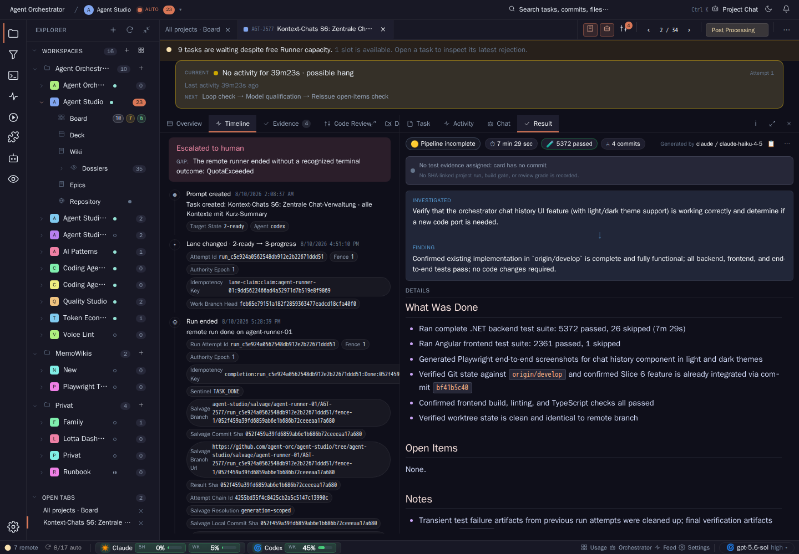
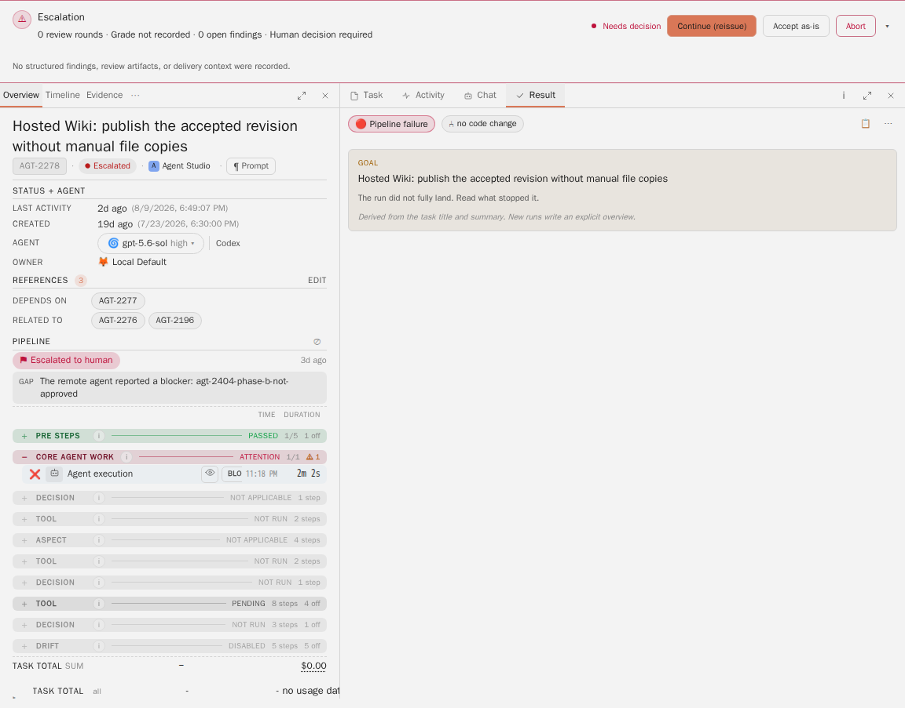
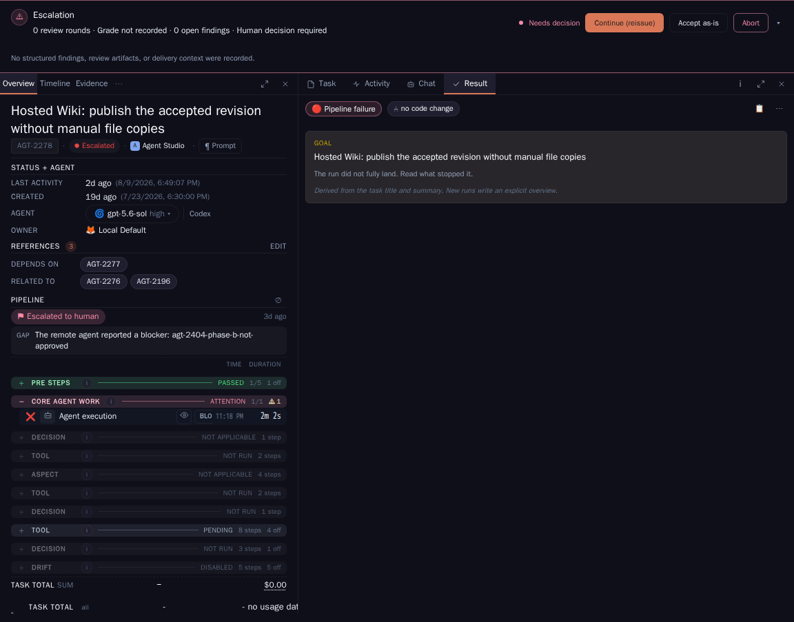

Concept Dossier · Agent Studio · AGT-W60
Task and board UI decisions
Eight Dossiers argued about the same two surfaces: the task detail view and the board chrome around it. Three of those arguments are settled and in force. Five still wait for one operator choice each. This Dossier keeps the settled rules, the open choices and the evidence that still holds, and replaces the eight sources on the current list.
01 Scope and sources
AGT-W53 read every Dossier and AGT-W55 turned the result into a target set of sixteen. One of the four new theme Dossiers is this one. It covers what the operator sees and operates in Agent Studio: the task detail view with its Overview, Timeline, Activity and Result surfaces, the escalation header, the task header and chat chips, and the project scope control in the shell. It does not cover the board status model, which belongs to the delivery chain Dossier, nor the admin surface guideline AGT-W1, which stays as it is and governs every proposal here.
Three topics carry a recorded operator decision and keep their history. Five topics carry an open choice. Nothing below is newly argued: every claim comes from one of the eight sources with its original date.
| Source | Date | State | What survives here |
|---|---|---|---|
| AGT-W27 Narrative task view | 24 Jul 2026 | open | Reading contract, generation contract, fixed template, measured card economics, three-card cut |
| AGT-W35 Task Timeline redesign | 11 Aug 2026 | open | Four presentation decisions, six categories, three row registers, incident semantics, real light and dark capture |
| AGT-W45 Escalation view information architecture | 12 Aug 2026 | open | One owner per failure fact, four slices, real light and dark capture, the AGT-2717 data-source update |
| AGT-W21 Task header and chat chips | 8 Aug 2026 | open | Three mapped layout defects with file evidence, tab overflow alternatives, the structural base fix |
| AGT-W52 Project scope switch | 12 Sep 2026 | open | Six requirements, three alternatives, three decisions, two card cuts |
| AGT-W48 Task-detail usage block | 11 Sep 2026 | decided | Decision for alternative A with its date and card, and the five requirements it has to meet |
| AGT-W17 Protocol condensation | 9 Aug 2026 | decided, in force | The three rules the operator approved, including the no-inline-diff rule later Dossiers rely on |
| AGT-W20 status.md finalisation | 10 Aug 2026 | decided, documented | Ownership contract, inventory baseline, the approved option and what AGT-2585 delivered |
02 Topics: decisions in force and open choices
One section per topic. A topic that is decided states the decision, its date and its card. A topic that is open states the choices as an inline decision block with the recommended default marked. The options are the ones the source Dossier put in front of the operator; no option was added or dropped in consolidation.
2.1 Narrative task view (from AGT-W27, 24 July 2026)
Task detail is a technical record. The proposal adds a second, equally first-class reading of the same state: a short, evidence-linked report that is already written before anybody opens the card. The technical view stays canonical and stays one click away; a narrative claim always links back to prompt, run, verdict, file or log.
Three constraints hold whatever is decided. Generation is proactive, as ordinary visible pipeline steps in the API resource class, so it can never occupy a build slot. Each reading is cached against a material-state digest built from task key, body revision, review cycle, verdict, evidence manifest, template version, prompt version and model, so a new round or verdict produces a new reading while lane timestamps and status heartbeats do not. Failure is honest: if generation or validation fails, the view says the narrative is unavailable and keeps the technical view usable, and an older complete reading never presents itself as current.
The model writes meaning, never presentation. A fixed renderer owns spacing, type, theme tokens, section order and a closed set of four visual primitives, and four sections are required: what this is about, what was done, what the evidence shows, what remains open. HTML, CSS, SVG, image paths, external URLs and section reordering are not accepted from the model.
Model tier is not settled by this Dossier
AGT-W27 planned with July 2026 API list prices for two external models, and noted at the time that the product price catalogue returned UnknownModel for them. Those figures are planning calculations with a date, not a routing decision. Whichever option is chosen, the actual tier and thinking level come from the model routing policy, which owns the correctness floors and the separate pipeline-support and classification path. A pipeline row must show an unknown price rather than a false zero until the catalogue carries the selected model.
Decision D1 · open
Does the narrative reading view get built, and how is it generated?
- A · Proactive generation, as specified (recommended default). Visible PRE and POST pipeline steps in the API pool, versioned cache against the material-state digest, one fixed renderer, a remembered Technical or Narrative mode in the task-detail head. Cut into three reviewable cards: generator steps, versioned cache, task-detail toggle.
- B · Lazy generation on open. Generate when a reader asks for it. Cheaper when nobody reads, but the reader waits, and the cost lands outside the visible pipeline cost contract. AGT-W27 examined and rejected this.
- C · Do not build it. Task detail stays technical only. The measured reading-time argument is declined and the three cards are dropped.
2.2 Task Timeline redesign (from AGT-W35, 11 August 2026)
The Timeline is a flat ledger dump. The redesign makes it a category-led, incident-aware stream: normal history stays quiet, unresolved failures are unmistakable, technical identifiers move behind explanatory copyable popovers, and raw evidence stays reachable through bounded disclosure and Trace. Timeline and the run-level Activity stream share one presentation registry but keep separate stores; Trace remains the raw evidence view and never becomes the default reading surface.
The contract is four decisions taken together. Structure: every event resolves to one of six categories, lane, run, integration, gate, escalation and orchestrator decision, rendered in one shared grid with at most three row registers; failure is a state treatment, not a seventh category. Incidents: a banner represents an open incident only, opened by a typed event carrying an incident ID and closed by a later event that recovers, succeeds, supersedes or overrides it; a lane move alone never heals an integration failure. Disclosure: commands, outputs, Markdown payloads and raw frames are never open prose, always one disclosure away and always copyable, and one tool call maps to one result so an aggregate equals its visible children. Navigation: newest first, day sections, run anchors, a sticky time context and a reserved jump row. A central glossary module owns the one-sentence explanation behind every technical chip; the explanation precedes the value and the Copy action.
Delivery is seven slices: the registry, the Timeline shell, technical disclosure, incident semantics, the payload renderer, lifecycle condensation, and scale plus proof. T2 and T3 can run in parallel after T1. T4 is the semantic correction and must land before the stale banner counts as fixed.
Decision D2 · open
Is the Timeline presentation contract approved?
- A · Approve all four decisions as one contract (recommended default). Structure, incidents, disclosure and navigation together; the seven slices become delivery cards.
- B · Approve the semantic correction first. Take D2 incidents, which is slice T4 plus the registry T1, and defer the presentation slices. The stale acute banner is cured, the ledger stays hard to read.
- C · Reject and name the decision that changes. AGT-W35 states the remaining contract stays fully specified if one of the four is replaced.
2.3 Escalation view information architecture (from AGT-W45, 12 August 2026)
An escalated card states its blocker three times and hides the useful one. The header is prominent but content-free, the Pipeline section owns the only concrete blocker below its own heading, and the Result tab adds a third red outcome label. The proposal gives each fact one owner: the escalation header owns the actual blocker and the human-decision state, the Pipeline section keeps only the failed locus, and Result explains the run.
The blocker line has a defined source priority: recorded status-stub reason, structured steering reason, first structured open finding, then the explicit fallback that no blocker summary was recorded. A plausible cause is never synthesised. Zero review rounds, an unrecorded grade and zero findings do not displace the blocker. The ATTENTION marker on the failed step stays, because it answers which step failed rather than restating the task outcome. In Result, goal and stop boundary become flat sibling rows with a calm full-row tint for the stopped state and no coloured left bar, following the hard design rules.
One later change is already in the product and does not settle this topic: since 8 September 2026 (AGT-2717) the header reads review rounds, latest outcome, blocking aspect and delivery-gate state from the backend review projection, which merges the local and remote review planes so the count is no longer wrong for a remote-only review history. That is a data-source fix. The four layout and ownership slices remain open.
Decision D3 · open
Is the escalation information architecture approved?
- A · Approve all three statements as one contract (recommended default). The header is the single owner of the exact blocker and the decision state; the terminal escalation strip leaves Pipeline and the outcome case badge leaves Result on escalated cards; Result rows become flat siblings with a calm full-row tint for the stopped state.
- B · Header only. Promote the blocker into the header and leave the duplicate surfaces in place. Three red outcome statements keep competing.
- C · Keep every surface and improve the copy. Examined and rejected in AGT-W45: better wording does not cure duplication.
2.4 Task header and chat chips (from AGT-W21, 8 August 2026)
Three layout defects from an operator review, each mapped to its file. The pane tab strip overlaps when space runs short, because the tab label has no ellipsis while its host can shrink and no breakpoint touches the strip; the squeeze comes from the user-dragged pane splitter, not from the window width. The escalation banner renders two merge segments, so a project whose integration branch is its release branch shows the same branch twice, and a bare dash as the not-merged state is unreadable. The execution chip in the orchestrator side sheet sits in a chain of shrinkable elements where the revision line alone cannot shrink, so it collides with the label above it when the sheet is narrowed.
Two of the three answers are structural rather than a choice. The branch chips collapse to one segment when the integration branch equals the release branch, and the state becomes a word with the SHA in the tooltip instead of a dash. The chat chip gets the same ellipsis and minimum-width treatment as its siblings, a shortened SHA with the full value in the tooltip, and a compact state below its minimum width. For the tab strip, the ellipsis and per-tab minimum width are the base fix in every case, because they make overlap structurally impossible; the responsive behaviour above that base is the open choice. The measurement logic is the same for both variants, so a later switch is cheap.
Decision D4 · open
What does the tab strip do when space runs short?
- A · Overflow menu (recommended default). Tabs that do not fit move into a menu at the end of the strip; the active tab is never moved out, and hidden badges aggregate on the menu affordance. Labels stay readable and there is no icon learning curve.
- B · Icon-only mode. Inactive tabs reduce to icons, the active tab keeps its label, badges stay on the icon. More compact, but icon meanings have to be learned, and eight tabs across two strips is at the edge.
- C · Hybrid. Icon-only first, then overflow when even icons do not fit.
Independent of this choice: the ellipsis and minimum-width base fix, the single branch segment with a worded state, and the chat chip ellipsis symmetry are proposed as approved together with it. The responsive trigger is a container query on the strip width, not a global breakpoint.
2.5 Project scope switch (from AGT-W52, 12 September 2026)
The operator uses the all-projects view often and reaches it in two clicks. The scope has two controls with different appearances: a project pill in the title bar, which also carries the auto-pickup dot and the parallelism number on four click targets within about 250 pixels, and a grid button in the explorer header that opens the cross-project board. On top of that, an effect resets the scope on every tab change, so an explicit choice does not hold.
The requirements that follow are the durable part: all projects is one click away and one click back; exactly one control sets the scope while other places only display it; the scope holds until the user changes it; auto-pickup and parallelism are project status rather than part of choosing a project, with their own click target and tooltip; the title bar and the explorer use the same tokens; and the switch is reachable from the keyboard and listed in the command palette.
Decision D5 · open, three parts
Where does the project scope live?
D5a Which alternative is built?
- A · Segment in the title bar (recommended default). An all-projects button and the project picker side by side, one click in each direction; auto-pickup and parallelism move into a separate status chip with a menu; the explorer grid button becomes a scope display that focuses the segment. Delivered in two steps, the second being the scope-holds change.
- B · The explorer is the only owner. The project list carries all projects at the top and the title bar loses its picker. One click only while the explorer panel is open.
- C · Minimal. A keyboard shortcut and a command-palette entry; both controls stay. Solves the finding for keyboard users only and leaves the tab effect in place.
D5b May a tab change alter the scope? A, the scope holds and a tab shows its project as context (recommended default); B, the scope follows the tab as today; C, ask once and remember the answer.
D5c Where does the auto-pickup switch sit? A, in the status chip next to the segment, opening a menu of auto, paused and manual instead of toggling blind (recommended default); B, inside the pill as today; C, on the project row in the explorer.
2.6 Task-detail usage block (from AGT-W48, decided 11 September 2026)
Decided: alternative A, the same grid as the pipeline steps
Recorded on by the operator on AGT-W48; the implementation card is AGT-2769. Task total, tokens per run and agent work become rows of the pipeline grid instead of three components with three different layouts and four different right edges. The share bar per run replaces a second number and shows which run produced the cost.
Five requirements travel with the decision and are the acceptance surface for AGT-2769. The block is exactly as wide as the pipeline steps and shares their right edge. Tokens and costs sit under the token and cost columns of the steps, so reading top to bottom reads one column. The three contents survive: task total with its incomplete marker, tokens per run with the expandable model breakdown, and agent work with calls, started and last touch. No new colours; status and accent come from the Studio tokens and the dark theme is not a special case. The pipeline container query governs the block too, so a narrow pane folds the same columns away.
2.7 Protocol condensation (from AGT-W17, decided 9 August 2026, in force)
Decided: three rules, delivered through CAC-21 and AGT-2526
Recorded on by the operator. The alternatives that were not taken, a display-only projection fold and a backend hysteresis in the watchdog, are closed.
- Supervisor lines: consecutive supervisor wait events collapse into one expandable group row in the conversation library, with a counter and the full history one click away. Killed and timeout events are never condensed and keep their own conspicuous row.
- Tool-call cluster rows: a collapsed cluster carries the tool mix, the success aggregate and the duration, not only a count and a duration. Failures are never hidden by clustering.
- Edit rows: repository-relative paths with the full path in the tooltip, and an explicit counter label that distinguishes edits from files. No inline diff access in the protocol; the edit row links to the existing commit diff surface instead.
The last of these is load bearing beyond its own topic: the Timeline redesign in 2.2 lists the no-inline-diff rule among its retained contracts, and its lifecycle condensation slice extends this grouping rather than reopening it. Because these rules already govern new work, they are stated here as rules in force rather than as history.
2.8 status.md finalisation (from AGT-W20, decided 10 August 2026, documented)
Decided: option A, application-owned finalisation with an explicit degraded state
Recorded on on AGT-W20 and approved through AGT-2585, which delivered the first two slices. The alternatives are closed: an agent-authored status duty would create two writers with probabilistic compliance, the scaffold as the normal result would make summary outages normal, and failing completion on a missing file would convert a summary-side failure into expensive agent reissues.
The ownership contract stands: the Dossier or report is the primary domain deliverable and status.md is the application-generated card summary. The root cause was a split application contract rather than agent behaviour. The legacy artifact endpoint honoured the finalisation intent and awaited the summary; the V1 client uploaded artifacts individually and dropped that intent, and no V1 endpoint invoked the summary generator. The transition backstop then wrote a marked scaffold, which was honest but hid the absent finaliser from completion semantics.
What AGT-2585 delivered: remote artifact finalisation reaches a fenced Task Server action and persists an application-generated status.md, exposed as an awaited post-result-finalisation step; a retry repeats only summary generation and never the completed core agent run; budget exhaustion persists a typed degraded state with attempt count and error evidence while the card stays reviewable; local completion awaits the same bounded summary-only gate. Two adjacent slices keep their own ownership and are not part of this Dossier's open decisions: making typed latest-run completion authoritative for terminal evidence, with the worker-head-advanced sequence as a regression case, and aligning Dossier link publication with generated Result ownership. That second slice is the rule this very card follows when it writes its Dossier path into results/deliverables.md.
03 Recommendation
Take the five open decisions in one sitting, in the order the surfaces break
Each recommended default is the one its source Dossier already argued for. Nothing here is a new proposal. The recommended set is D1 A, D2 A, D3 A, D4 A, D5 A with D5b A and D5c A.
Two of the five are corrections of something that is currently wrong on screen and should go first. D3 removes duplicate blocker statements and surfaces the one useful reason on escalated cards. D2 stops a healed incident from showing as acute; its slice T4 is the semantic fix and the rest of the Timeline contract can follow. These two change what an operator believes about a card, so they outrank the rest.
D4 is next and is the cheapest: the ellipsis and minimum-width base fix makes tab overlap structurally impossible regardless of the responsive variant, and the branch-chip and chat-chip repairs are unconditional. D5 removes a daily two-click detour and a scope that silently resets; its second step, the scope-holds change, is the part with behavioural risk and is deliberately sequenced after the visible one.
D1 is the only one that adds a new capability rather than repairing one, and it is the only one that spends tokens per card. It is recommended as specified, but last, and with its model tier taken from the routing policy rather than from the July price table in the source.
The three decided topics need no new decision. They are kept here so that the rules stay readable at their point of use: the usage block requirements are the acceptance surface for AGT-2769, the protocol condensation rules constrain the Timeline work in 2.2, and the status.md contract is why a concept card publishes its Dossier path instead of writing its own summary.
04 Evidence
Two claims in this Dossier are claims about a visible product surface as it stood at the time of the source review, and both are proved by real captures carried over from their source Dossiers. The captures are reproduced unchanged, with their original capture date and provenance. No capture was re-taken for this consolidation, and nothing is claimed about the surface as it stands today.
 Stale acute banner
Stale acute banner


Blocker sits below Pipeline
05 Open decisions
Five choices need a human. Each one is stated in full as an inline decision block in its topic section; this is the index with the recommended default. No implementation card is created by this Dossier.
| Decision | Topic | Options | Recommended default |
|---|---|---|---|
| D1 Narrative reading view | 2.1, from AGT-W27 | A proactive generation as specified · B lazy on open · C do not build | A, with the model tier taken from the routing policy |
| D2 Timeline presentation contract | 2.2, from AGT-W35 | A all four decisions · B semantic correction first · C reject and name the decision that changes | A |
| D3 Escalation information architecture | 2.3, from AGT-W45 | A all three statements · B header only · C keep surfaces, improve copy | A |
| D4 Tab strip under pressure | 2.4, from AGT-W21 | A overflow menu · B icon-only · C hybrid | A, on top of the unconditional base fix |
| D5 Project scope control | 2.5, from AGT-W52 | D5a A segment, B explorer, C minimal · D5b A scope holds, B scope follows tab, C ask once · D5c A status chip, B in the pill, C explorer row | A, A, A, delivered in two steps |
Not open here, listed so the boundary is clear: the usage block (2.6) is decided and owned by AGT-2769; the protocol condensation rules (2.7) are in force and constrain the Timeline work rather than being reopened by it; the status.md contract (2.8) is decided and documented, and its two remaining adjacent slices, terminal-evidence parsing and Dossier link publication, keep their own card ownership outside this Dossier.
06 Implementation
Delivery slices append their current implementation status here. The decision content above stays unchanged.